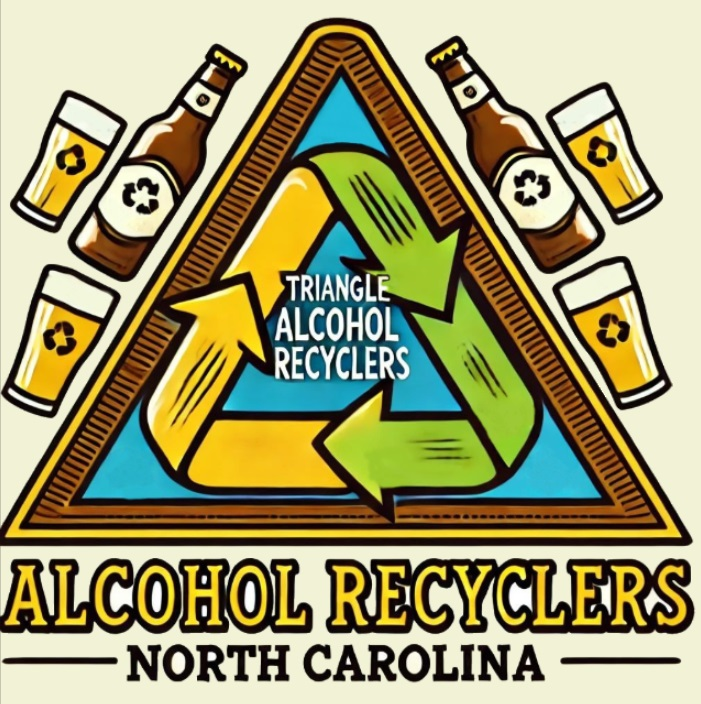

Turning Alcohol Into Good Times and Good Deeds!
At Triangle Area Alcohol Recyclers, we responsibly enjoy the finest beverages funded by your generous donations—all while supporting great causes in the NC Triangle area. Cheers to making a difference, one drink at a time!
We're your spirited neighbors, always ready to raise a glass for good! Passionate about making a difference and building community connections, we’re the team you never knew you needed.
